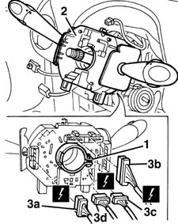

5550A12 complete stalk unit - r+r for versions with air bag
- Path
- Procedures > 55 ELECTRICAL EQUIPMENT > 5550 WARNING AND MANOEUVRING INDICATORS > 5550A stalk unit > 5550A12 complete stalk unit - r+r for versions with air bag
- Kind
- repair procedure (removal / refitting; the operation number is the code)
- Applies to
- all engines; all production periods
- Interactive page
- https://sloeber94.github.io/elrnDB-fMltpl/en/#/2891943
Applies to: all engines; all production periods
 Removing
Removing
 Refitting
Refitting4110A11 steering wheel - r+r for replacement or check for versions with air bag
7040A26 steering column trim - r+r
5580C12 clock spring for air bag module on steering wheel r r
Closely observe the safety regulations established for this operation.
1. Loosen the band fixing the steering column switch unit.
2. Move the steering column switch unit.
3. Disconnect the electrical connections (3a, 3b, 3c, 3d) and recover the steering column switch unit.
 | Name | Connector |
|---|---|---|
3a | Stalk unit | H5A |
| Name | Connector |
|---|---|---|
3b | Stalk unit |
| Name | Connector |
|---|---|---|
3c | Stalk unit |
| Name | Connector |
|---|---|---|
3d | Stalk unit |

Applies to: all engines; all production periods
Refitting
RemovingCheck that the steering column switch unit is not damaged and, if necessary, conduct an electrical test on it.
Connect the electrical connections.
Refit the steering column switch unit.
Tighten the band fixing the steering column switch unit.
5580C12 clock spring for air bag module on steering wheel r r
7040A26 steering column trim - r+r
4110A11 steering wheel - r+r for replacement or check for versions with air bag
Check the operation of the systems involved (lights, wipers, horns).
Topics linked from this page (7)
- 4110A11 steering wheel - r+r for replacement or check for versions with air bag
- 5580C12 clock spring for air bag module on steering wheel r r
- 5580C18 AIR BAG MODULE - R+R
- 7040A26 steering column trim - r+r
- H005B Stalk unit ( FACIA )
- H005C Stalk unit ( FACIA )
- H005D Stalk unit ( FACIA )
Topics that link to this page (13)
- I01 SIDE LIGHTS/NO. PLATE LIGHTS NOT WORKING
- I05 DIPPED HEADLAMPS NOT WORKING
- I06 MAIN BEAM HEADLAMPS NOT WORKING
- I10 DIRECTION INDICATORS / HAZARD WARNING LIGHTS / NOT WORKING
- I11 DIRECTION INDICATORS / HAZARD WARNING LIGHTS / NOT WORKING INTERMITTENTLY
- J02 WINDSCREEN WIPERS NOT WORKING
- J03 SCREEN WASHER NOT WORKING
- J04 BACK WINDOW WIPER NOT WORKING
- J05 BACK WINDOW WASHER IS NOT WORKING
- 4110A31 Steering control shaft SUPPORT - R.R. for versions with Air Bag
- 5505C30 under-facia wiring - r r
- 5505C31 under-facia wiring - r r
- 5520A12 ignition switch assembly - r r for versions with air bag